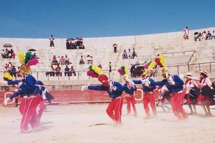
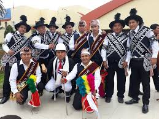
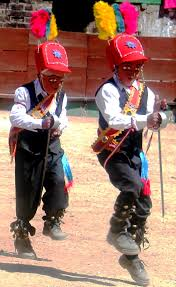

|
 |
Huanca |
|
|  | Representa la danza más apreciada, es propia de la festividad de San Francisco de Asís (octubre); se considera como la danza simboliza a Pomabamba. La cuadrilla está formada por siete integrantes elegantemente vestidos con pantalones rojos de pana, casaca azul con flancos y flecos dorados, camisa blanca, corbata roja, zapatos uniformes del mismo color (negro), medias blancas, en la cabeza llevan una monterilla encima de la cual sobresalen tres plumajes (rojo verde y amarillo) y sobre el rostro llevan una máscara de carácter españolesco; complementan su vestir con una espada y un broquel de metal. Su marco musical está compuesto por un violinista y un arpista. |
Negritos |
|
| Supuestamente representan a los esclavos liberados por Castilla, que emulan festivamente aquella abolición; indudablemente en el caso de Pomabamba ha sido modificado con matices propios de esta zona. La cuadrilla está conformada por ocho integrantes distribuidos en dos columnas de tres integrantes cada uno, en el medio de ellos figura el capitán (cantante) y por delante de todos ellos aparece el personaje jocoso de aspecto gorilesco llamado caporal que ridiculiza a los gamonales de aquellos tiempos; este personaje viste con botas negras o marrones, pantalones blancos, saco largo, una máscara de gorila, un casco y lleva consigo una matraca. Los demás integrantes visten con pantalones negros, chalecos, sombrero negros, con una pluma delantera negra, camisa blanca; sobre el torso cruzan dos bandas de fondo negro adornada con monedas. En su atuendo complementan con una campanilla, su marco musical lo conforman un arpista y un violinista. |  |
Huanquilla |
|
|  | Esta comparsa es un baile típico del distrito de Huayllán, es una danza que nunca falta especialmente en la festividad de San Francisco de Borja, en el barrio de Huayllán Alto y en la comunidad de Chuyas (distrito de Pomabamba). La cuadrilla está compuesto por cinco integrantes varones, vestidos todos homogéneamente con zapatos negros, pantalón y chaleco azul, camisa blanca, banda roja, monterilla con plumajes y mascara, complementando su atuendo usan unos broqueles y espada. Su marco musical está compuesto por un violinista, un arpista y un flautista. |
Tinya Palla |
|
| Es una danza típica de la zona de Tinyash, Acobamba y Huayllán; la cuadrilla está compuesto por mujeres distribuidos en dos columnas y al medio va la capitana acompañada de una niña; todas visten con la conocida pintaybata, monilla celeste (especie de blusa) sobre la cual se visten una lliclla azulina, sombrero blanco de lana con cinta roja. Delante de ellas baila un varón (yunca) quien va haciendo figuras llevando en la mano una culebrilla (soguilla). El yunca viste de negro sobre sus canillas lleva shagapis (cascabeles de frutos naturales) y en el sombrero blanco bien remangado lleva en la parte frontal un espejo y plumajes de colores; el marco musical es de un par de chiroques. |  |
Apu Inca |
|
 |
Esta danza es muy especial en el centro poblado menor de Huanchacbamba, está compuesto por mujeres jóvenes en dos columnas de tres pallas cada una, delante de ellas va el guía (sargento), en el medio de ellas va el Inca, delante de todos ellos baila un jocoso personaje conocido como brujo. Y finalmente un personaje místico muy especial lo representa al cóndor (varón que lleva sobre sí los plumajes y cabeza de un cóndor disecado). Con respecto a la vestimenta, el Inca está adornado con elementos metálicos con figuras del sol y la luna, centro metálico y túnicas; mientras que las pallas usan blusas y faldas de seda (de colores cambiantes según el día festivo) pudiendo ser rosado, celeste y morado, llevan una pechera adornada y sobre la cabeza una coronilla de flores, que en su parte frontal cuelgan delicados hilos. El brujo viste con pantalón negro, escarpines y sobre la cabeza una peluca desgreñada, lleva sobre el hombro ceñido una comadreja disecada y en la mano una pelota de trapo atada a un hilo largo. Su coreografía es variada al son de un arpista y un violinista, sus pallas bailan y cantan al son de la música y al vuelo de sus pañuelos. |
Wayta Pallas |
|
| Personajes femeninos que evocan la época de los Incas, en la que representan a las princesas de esa época. La vestimenta de estas pallas es a base de bata, polleras, sombrero, lliklla y los adornos. Con respecto a los adornos, utilizan largos collares y pecheras. En su coreografía sostienen en ambas manos pañuelos blancos que han de hacer bailar en forma parecida al vuelo de las mariposas (casi parecida al de las anacas). Del mismo modo utilizan una especie de manta corta (lliklla) de color azul, que se visten sobre el hombro adoptando una forma triangular hacia el pecho y la espalda. Su marco musical lo conforman dos cajeros, que a ritmo de sus cajas y flautas largas hacen escuchar su bullicioso y contagiante ritmo. |  |